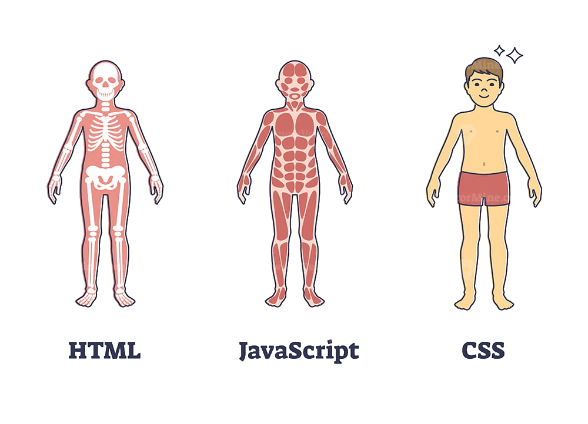

HTML - HyperText Markup Language
HTML é uma linguagem extremamente utilizada na área de desenvolvimento. Ela é voltada para o desenvolvimento Web,
e tem como função permitir aos programadores a inserção de items, seja texto, imagens, gif's ou videos na página.
HTML é uma linguagem que funciona sozinha, mas muito raramente uma página será composta somente por HTML. Juntamente do HTML, existem
também o CSS e o JavaScript.
Essas três linguagens são sempre vistas em conjunto, sendo que o CSS permite a mudança na aparência e forma de visualização dos
itens presentes no HTML. E o JavaScript permite criar lógicas por trás desses itens.
Uma analogia interessante para se pensar seria que, enquanto o HTML são os ossos e forneceria a estrutura fundamental para o
corpo. O CSS seria a pele e toda a parte externa do nosso corpo, a parte que nós torna ""bonitos"". E o JavaScript seriam os
músculos, orgãos e o cerébro, os quais nos fazem mover, agir e funcionar como um ser humano.

Páginas Relacionadas: CSS - JS